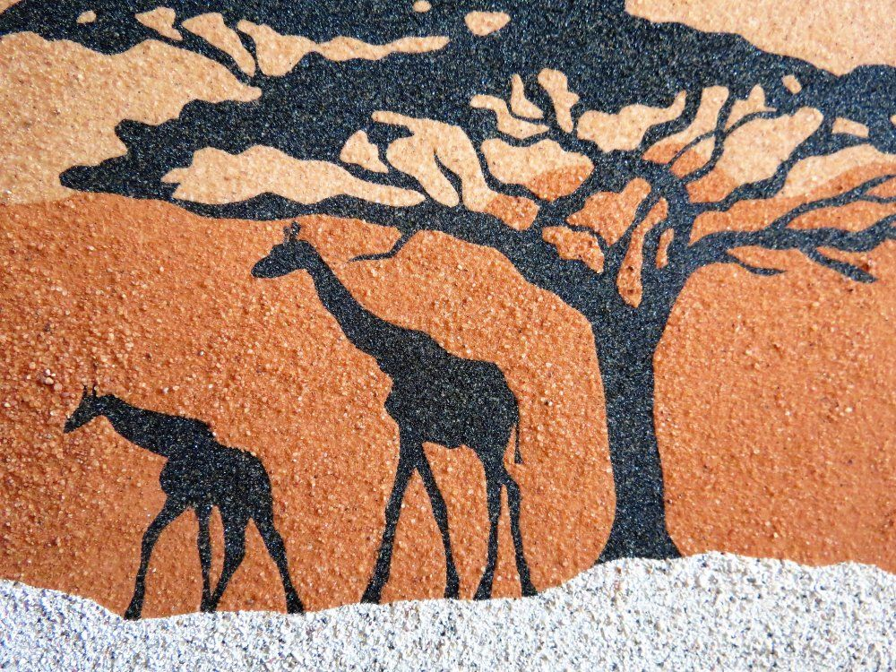
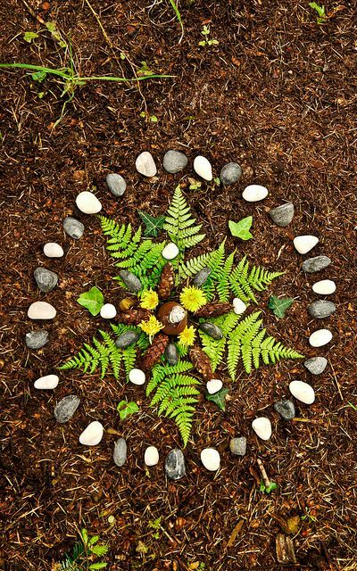
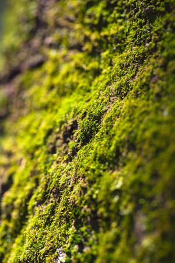
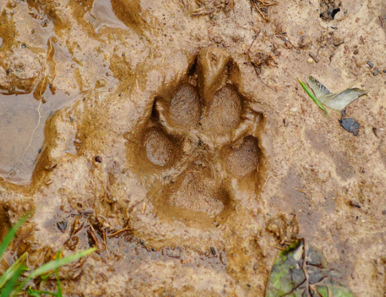

Nature et sable
Objectifs :
- Expression artistique
- Stimulation sensorielle
Contenu :
Création d’œuvres à partir de sables de différentes textures, sur différents supports.
Pour tout public

Créer avec le vivant
Objectifs :
- Expression artistique
- Stimulation sensorielle
Contenu :
Création d’œuvres à partir de matériaux naturels (feuilles, bois, mousses, écorces...)
Pour tout public

Œuvre collective
Objectifs :
- Renforcer le lien social
- Valoriser le groupe
Contenu :
Réalisation d’une œuvre commune visible ou d’une œuvre éphémère dans la nature (land art).
Pour tout public

Nature & mémoire
Objectifs :
- Stimuler les souvenirs et les sens
- Favoriser l’échange
Contenu :
Manipulation d’éléments naturels, évocation de souvenirs, création simple.
Pour EHPAD, structures sociales et paramédicales

Découverte de la flore locale
Objectifs :
- Découverte de la flore locale
- Création d’un herbier ou œuvre végétale
Contenu :
Balade de proximité, observation et création d’un herbier ou d’une "carte nature".
Pour scolaires et grand public

Sur les traces des animaux
Objectifs :
- Découverte des animaux sauvages
- Stimulation sensorielle
Contenu :
Observation des traces et empreintes laissées par les animaux.
Pour scolaires et grand public